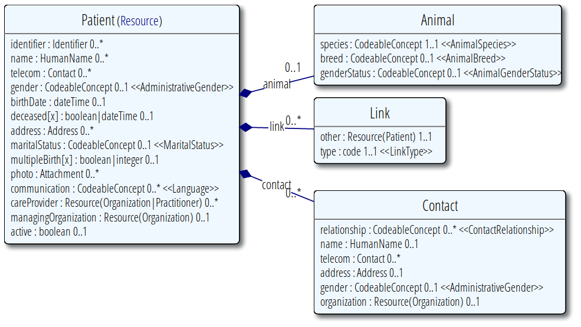

pg, js and health IT
pgconf 2016 by @niquola
Nikolai Ryzhikov
CTO of Health SamuraiPatient Centric
Evidence Based Medicine
Standards
Fast Health
Interoperability
Resources
Informational Model (~100)

~100 Resources
Patient

Why FHIR?
- open
- community
- eco-system
 Fhirbase
Fhirbase
Database as a library
- Kainos (UK)
- mgrid (ND)
- MIAC & Netrika (RU)
- HSPC (US)
- ePrescriptions (BY)
Problems
- language
- modularity
- dev. experience
SQL PG/PLSQL
func _expand_search_params(_resource_type text, _query text) RETURNS setof query_param
WITH RECURSIVE params(parent_resource, link_path, res, chain, key, operator, value) AS (
SELECT null::text as parent_resource, -- we start with empty parent resoure
'{}'::text[] as link_path, -- path of reference attribute to join
_resource_type::text as res, -- this is resource to apply condition
ARRAY[_resource_type]::text[] || key as chain, -- initial chain
key as key,
operator as operator,
value as value
FROM fhirbase_params._parse_param(_query)
WHERE key[1] NOT IN ('_tag', '_security', '_profile', '_sort', '_count', '_page')
UNION
SELECT res as parent_resource, -- move res to parent_resource
fhirbase_coll._rest(ri.path) as link_path, -- remove first element
this.get_reference_type(x.key[1], re.ref_type) as res, -- set next res in chain
x.chain AS chain, -- save search path
fhirbase_coll._rest(x.key) AS key, -- remove first item from key untill only one key left
x.operator,
x.value
FROM params x
JOIN searchparameter ri
ON ri.name = split_part(key[1], ':',1)
AND ri.base = x.res
JOIN structuredefinition_elements re
ON re.path = ri.path
WHERE array_length(key,1) > 1
)
SELECT
parent_resource as parent_resource,
link_path as link_path,
res as resource_type,
fhirbase_coll._butlast(p.chain) as chain,
ri.search_type,
ri.is_primitive,
ri.type,
fhirbase_coll._rest(ri.path)::text[] as field_path,
fhirbase_coll._last(key) as key,
operator,
value
FROM params p
JOIN searchparameter ri
ON ri.base = res
AND ri.name = key[1]
where array_length(key,1) = 1
ORDER by p.chain
plv8: V8 JavaScript in pg
- Scalar function calls
- Trigger function calls
- Mapping between JS and DB types
- Prepared Statements and Cursors
- Subtransaction & Window function API
- Remote debugger
- Runtime separation across users
- Heroku & RDS
plv8: functions
CREATE FUNCTION plv8_test(keys text[], vals text[])
RETURNS text AS $$
var o = {};
for(var i=0; i<keys.length; i++){
o[keys[i]] = vals[i];
}
return JSON.stringify(o);
$$ LANGUAGE plv8 IMMUTABLE STRICT;
SELECT plv8_test(ARRAY['name', 'age'], ARRAY['Tom', '29']);
-- plv8_test
---------------------------
-- {"name":"Tom","age":"29"}
plv8: returning function calls
CREATE TYPE rec AS (i integer, t text);
CREATE FUNCTION set_of_records() RETURNS SETOF rec AS
$$
// plv8.return_next() stores records in an internal tuplestore,
// and return all of them at the end of function.
plv8.return_next( { "i": 1, "t": "a" } );
plv8.return_next( { "i": 2, "t": "b" } );
// You can also return records with an array of JSON.
return [ { "i": 3, "t": "c" }, { "i": 4, "t": "d" } ];
$$
LANGUAGE plv8;
SELECT * FROM set_of_records();
plv8: triggers
CREATE FUNCTION test_trigger() RETURNS trigger AS
$$
plv8.elog(NOTICE, "NEW = ", JSON.stringify(NEW));
plv8.elog(NOTICE, "OLD = ", JSON.stringify(OLD));
plv8.elog(NOTICE, "TG_OP = ", TG_OP);
plv8.elog(NOTICE, "TG_ARGV = ", TG_ARGV);
if (TG_OP == "UPDATE") {
NEW.i = 102;
return NEW;
}
$$ LANGUAGE "plv8";
CREATE TRIGGER test_trigger
BEFORE INSERT OR UPDATE OR DELETE
ON test_tbl FOR EACH ROW
EXECUTE PROCEDURE test_trigger('foo', 'bar');
plv8: cursors
var plan = plv8.prepare(
'SELECT * FROM tbl WHERE col = $1', ['int']
);
var rows = plan.execute( [1] );
var sum = 0;
for (var i = 0; i < rows.length; i++) {
sum += rows[i].num;
}
plan.free();
return sum;
js in pg
- better languages
- performance
- eco-system
pg.js: mock plv8
Client = require('pg-native')
global.INFO="INFO"
global.ERROR="ERROR"
global.DEBUG="DEBUG"
module.exports =
execute: ->
client.querySync.apply(client, arguments).map(x) ->
obj = {}
...
elog: (x, msg) ->
console.log "#{x}:", msg
return
quote_literal: (str)-> str && client.pq.escapeLiteral(str)
quote_ident: (str)-> str && client.pq.escapeIdentifier(str)
call: (fn, args...)->
...
require: (nm)->
require('./loader').scan(nm)
cache: {}
dev in node
namings = require('../core/namings')
pg_meta = require('../core/pg_meta')
...
fhir_create_resource = (plv8, query)->
resource = query.resource
throw new Error("expected arguments {resource: ...}") unless resource
errors = validate_create_resource(resource)
return errors if errors
[table_name, hx_table_name, errors] = ensure_table(plv8, resource.resourceType)
...
exports.fhir_create_resource = fhir_create_resource
exports.fhir_create_resource.plv8_signature = ['json', 'json']
test in node
plv8 = require('../../plpl/src/plv8')
crud = require('../../src/fhir/crud')
assert = require('assert')
describe "CORE: CRUD spec", ->
beforeEach ->
plv8.execute("SET plv8.start_proc = 'plv8_init'")
schema.fhir_drop_storage(plv8, resourceType: 'Users')
schema.fhir_create_storage(plv8, resourceType: 'Users')
it "create", ->
created = crud.fhir_create_resource(plv8, resource: {resourceType: 'Users', name: 'admin'})
assert.notEqual(created.id , false)
assert.notEqual(created.meta.versionId, undefined)
assert.equal(created.name, 'admin')
Deploy to postgres
$ ./plpl reload Use from postgres
SELECT fhir_create_resource($JSONB$
{
"resource":
{
"resourceType": "Patient",
"id": "smith",
"name": [{"given": ["Smith"]}]
}
}
$JSONB$);
Validation by JSON Schema
{
"title": "Example Schema",
"type": "object",
"properties": {
"firstName": {"type": "string"},
"lastName": {"type": "string"},
"age": {
"description": "Age in years",
"type": "integer",
"minimum": 0
}
},
"required": ["firstName", "lastName"]
}
JSON Patch
[
{ "op": "replace", "path": "/baz", "value": "boo" },
{ "op": "add", "path": "/hello", "value": ["world"] },
{ "op": "remove", "path": "/foo"}
]
Problems
- native modules support in plv8
- deploy without re-connect
- faster index functions
Data Platform (nobackend)
for Data Driven Systems
firebase.com
var myFirebaseRef = new Firebase("https://?.firebaseio.com/");
myFirebaseRef.set({
title: "Hello World!",
author: "Firebase",
location: {
city: "San Francisco",
state: "California",
zip: 94103
}
});
app code?
- REST API
- security
- validation